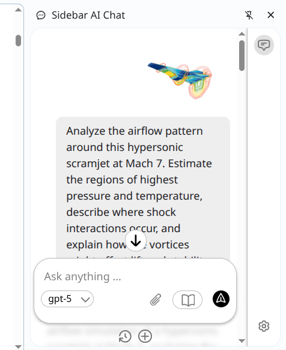

Minimal. Fast. Local-first.
Chat with AI in your browser side panel
Bring your own API keys. Choose a model per chat. Your data stays in the browser.

Minimal. Fast. Local-first.
Bring your own API keys. Choose a model per chat. Your data stays in the browser.